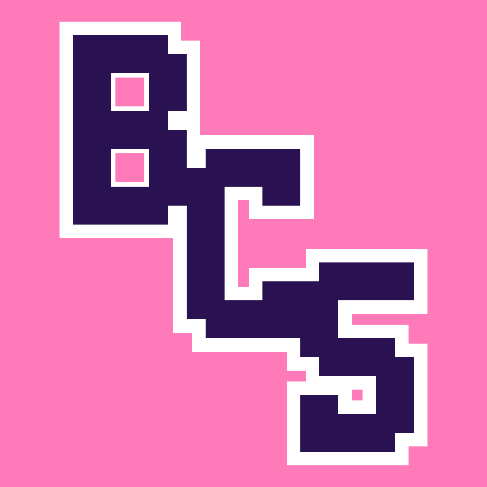

Üdvözlünk mindenkit! Palotás Boglárka és Éder Milica vagyunk. Mi ketten 2023 nyarán rájöttünk, hogy hiányoznak azok a játékok melyeket gyermekként játszottunk. Persze még mindig léteznek például a StarStarble online vagy a World of Warcraft, de Nem ugyan olyan már. Minden megváltozott, modernebb lett, benne vannak az új társadalmi normák ami természetesen NEM BAJ, viszont akik úgy szeretnének játszani mint mi és nosztalgázni szeretnének azoknak van egy jó hírem. A bobCatSS bemutatja a nosztalgikus grafikát egy modern működési szoftverrel.
Készítette: Palotás Boglárka és Éder Milica · 2026 · Vissza a lap tetejére